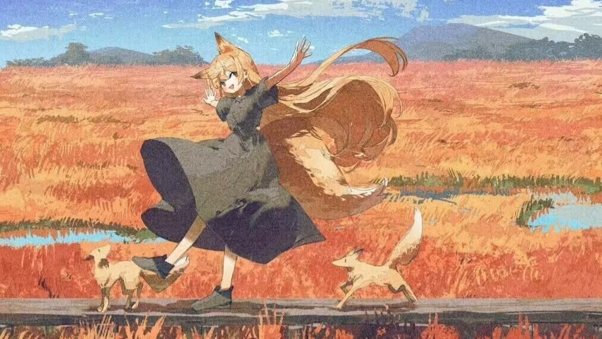

图片与内容记录
图片取自博客 0305.tw.cn 及博主自有图床 photo.0305.tw.cn，使用时进行等比缩放与压缩。图床地址用于记录本次取得素材的位置，不代表插画的原创署名或可再分发授权。
文章来自博主提供的公开文章备份，仅采用 4 篇已发布文章，不含回收站内容。小诗来自站点公开页面，保留原文字句。线性图标与风形站标使用 SVG 路径绘制；字体使用浏览器系统字体，不分发字体文件。

IMAGE & CONTENT SOURCES
记录每一张配图和每一段文字的来处
图片取自博客 0305.tw.cn 及博主自有图床 photo.0305.tw.cn，使用时进行等比缩放与压缩。图床地址用于记录本次取得素材的位置，不代表插画的原创署名或可再分发授权。
文章来自博主提供的公开文章备份，仅采用 4 篇已发布文章，不含回收站内容。小诗来自站点公开页面，保留原文字句。线性图标与风形站标使用 SVG 路径绘制；字体使用浏览器系统字体，不分发字体文件。